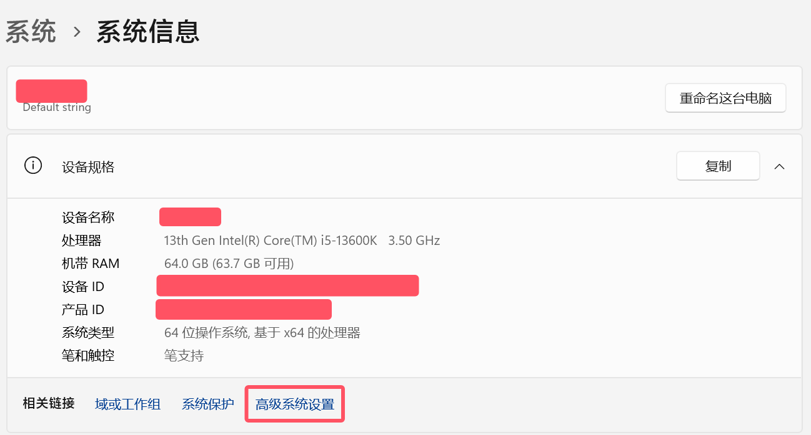
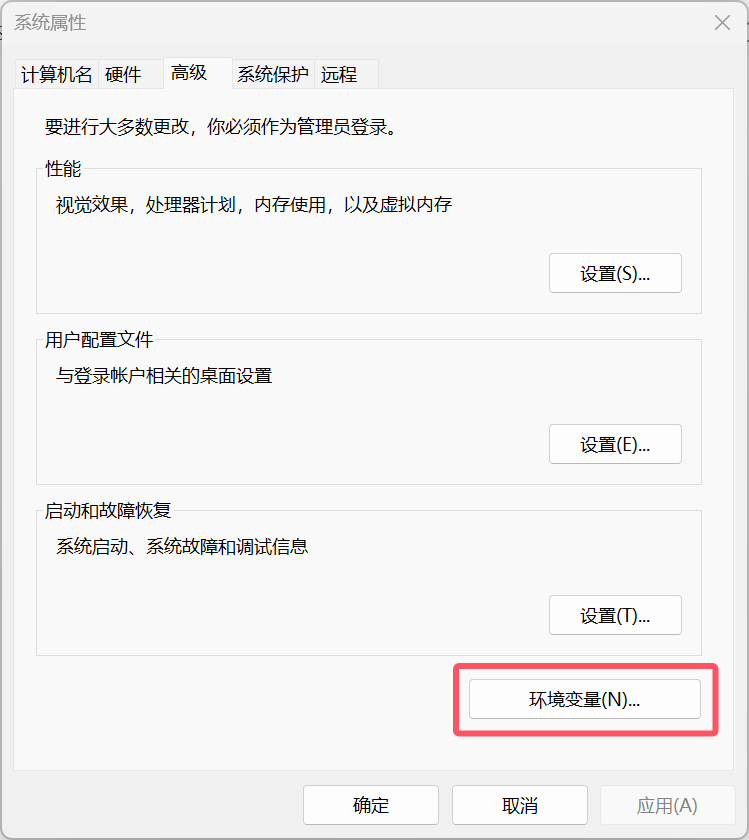
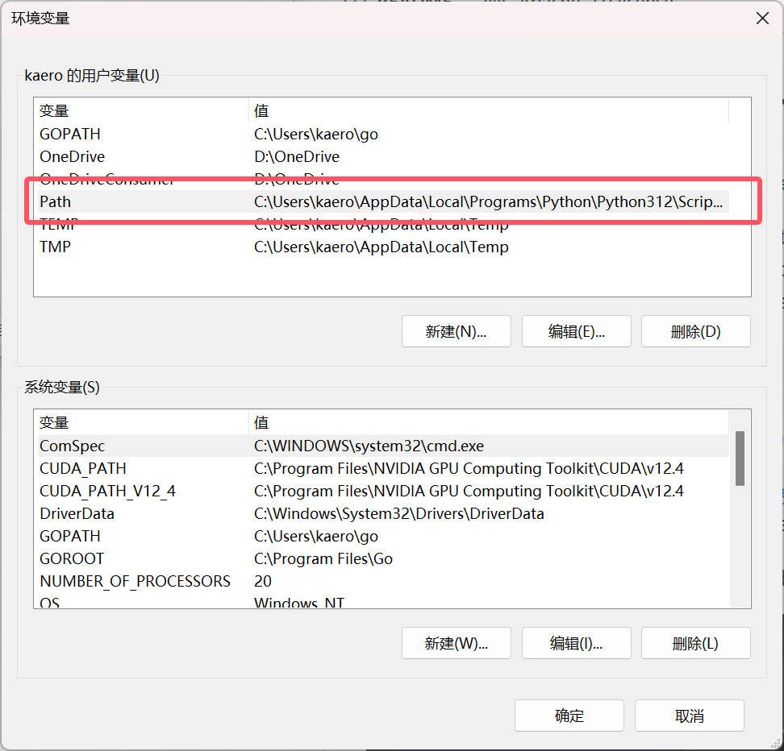
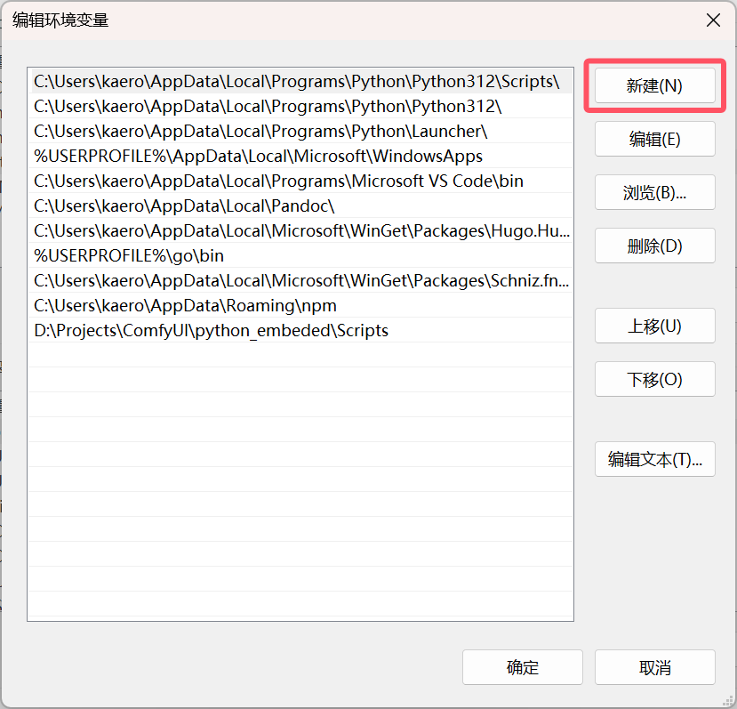

陶小婧年轻的时候脾气爆炸，而且她发脾气的方式很奇怪，当面倒也不怎样，而是偷偷开我的电脑删照片。我们结婚时拍的婚纱照就这样被她销毁了，硬盘上的存档消失不见，实体的相框相册也不知道扔到了哪个垃圾堆。过年回家的时候我特地去了一趟南昌的胜利路步行街，盼着能找到当初拍婚纱的摄影机构，哪怕付费也好，只要能找回存档就足够了，可惜时过境迁，胜利路大变样，那家婚纱摄影公司也不见了。
好在仍有一幅照片保存在我母亲那里，总算不至于让这些意义特殊的照片全数湮灭。2015年买房，母亲夏天过来探视，不远千里从南昌把这幅照片带到了深圳。
{kind=link}
如今又过了快十年，只是经过南昌到深圳、再从深圳到苏州的一路风霜，这幅照片也已经严重褪色，相框也摇摇欲坠，想挂在墙上都有些担心它是不是哪天忽然就散架了。尝试了一下手工修复，总觉得自己技术太差，难以达到满意的程度，于是就想试试 AI 行不行。
ComfyUI 内嵌 Python 版本差异导致的一个常见问题
这里面藏着一个很容易被忽略的坑，即 Python 版本的问题。
我的 Windows 11 已经安装过 Python 3.12，但 ComfyUI 内嵌了一个 Python 在文件夹 ComfyUI/python_embeded 里面，它的版本是 3.11，这就导致安装前置组件的时候，我们打开对应的 Github 链接，会显示对应 Python 不同版本的下载，比如 DLib：
{kind=link}
我们下载 dlib-19.24.1-cp311-cp311-win_amd64.whl，会提示无法安装。如果你此时和我一样，下载了 3.12 的对应版本，安装倒是顺利的，但当你开开心心重启 ComfyUI，一打开界面傻眼了，Import Failed！
我不知道有没有其他朋友遇到这样的情况，总之我在这里卡了很久，因为你安装的版本对应的是系统 Python，而不是 ComfyUI 内嵌的 Python。直到偶然注意有人提示要把这个内嵌 Python 的路径也加入系统变量，才可以安装正确的版本，才终于搞定。
比如我的 ComfyUI 路径是 D:\ComfyUI\，那就要在系统变量里面加入 D:\ComfyUI\python_embeded\Scripts。具体的操作步骤如下：
- 在电脑图标上右键，在弹出菜单中点击「属性」；
- 在弹出的「系统信息」页点击「高级系统设置」；
系统信息页 - 在打开的「系统属性」页，点击右下角的「环境变量」；
系统属性页
4. 在打开的「环境变量」页，双击 Path：
环境变量 - 点击「新建」，把 ComfyUI 内嵌的 Python，比如我就是上面的
D:\ComfyUI\python_embeded\Scripts，复制进去，点击确定，就 OK 了。
编辑环境变量
{kind=link}
{kind=link}
{kind=link}
{kind=link}
如此一来，就可以安装正确的 3.11 版本的 Dlib，InsightFace 同理，这样就可以解决节点缺失的问题了。
工作流拆解
这幅婚纱照的主要问题是褪色，洋红色保留得很好，但蓝色黄色几乎掉光了。画板也泛黄，而且在相机翻拍之后纹理很明显，放大之后布满粗粝的细节，些许污点问题倒不大。